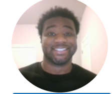

Areyana Proctor

Areyana Proctor is a PhD student in Communication Arts (Media and Cultural Studies)
I am originally from Denver, Colorado. I received my BA in Journalism and Critical Media Practices from the University of Colorado, Boulder. I also have an MA in Communication Arts from the University of Wisconsin-Madison.
I am interested in doing research that explores how Black people use and produce media using digital technologies, especially as a form of representation and political contestation.
Some of my hobbies include reading, writing (although I don't really do this for fun anymore), playing the sims, watching tv, movies, and YouTube, and doomscrolling on social media. I hope to get into my analog hobbies like crocheting and scrapbook journaling, but I think that will have to be a post-coursework endeavor.
Faizon Aldridge

Faizon Aldridge is a UNRS student foing for a MS information degree
I am from Sun Prairie, Wisconsin which kisses Madison. I received my BS in Liberal studies from UW-Whitewater.
I am interested in the Computer science and also in information science as i like studying how information systems and technology impact and change communities
A good deal of my favorite hobbies include watching gameplay of new video games as i love to see creative game developers works, new academic fields (basic knowledge) to increase my understanding of the world, also quite fun things to know about too, and lastly hanging out in various clubs and knowing people.